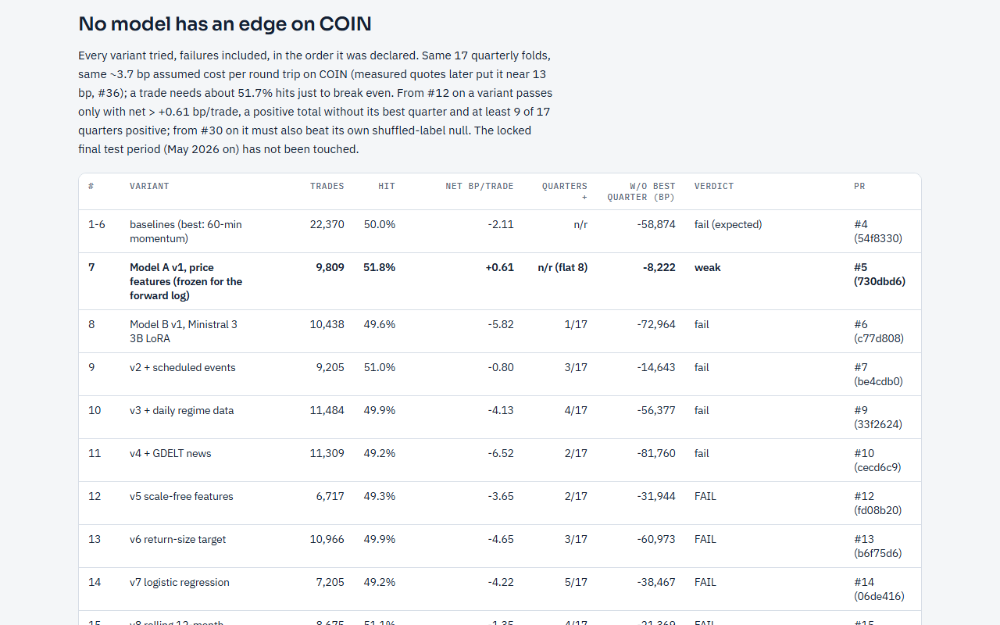

Work01
Market Impact Lab
Can a map of everything that moves Coinbase stock predict its next 60 minutes well enough to beat trading costs? I built the test to answer that honestly. The answer is no.
- Status
- Concluded: no edge
- Built
- Nov 2026
- Role
- Solo, directing Claude Code agents
- Stack
- Python, LightGBM, PyTorch, LoRA, pytest
- Code
- Private repository
- Money
- None. Paper trading only

01Problem
Coinbase (COIN) moves with bitcoin, ether, other crypto stocks, the Nasdaq, scheduled news and its own trading volume. If I mapped all of that, could a model call the next hour's direction often enough to make money after costs?
Most backtests that say yes are fooling themselves: they peek at future data, try fifty ideas and report the best one, or assume trading is free. I wanted a setup where a yes would actually mean something.
02What I built
- A clean 15-minute price history going back to 2021, checked for gaps and errors before any model sees it.
- Model A: gradient-boosted trees (LightGBM) on signals from the impact map.
- Model B: a small language model fine-tuned on my own GPU, reading the market as text. Later a larger version.
- A frozen copy of the best model that logs paper calls every trading day, with no orders and no money.
03How it was tested
- Walk-forward: always trained on the past and tested on what came next, over 17 quarters from April 2022 to April 2026.
- Locked final test: a final stretch of data that no model has been scored on.
- Checks on the test itself: automatic checks that catch peeking at future data and a broken test setup.
- Pass bar written first: each variant's pass bar was written down before it ran, and later variants also had to beat pure noise.
- Costs included: every result is net of trading costs.
04Results
| Variant | Trades | Hit rate | Net bp | Verdict |
|---|---|---|---|---|
| Model A v1 (price features) | 9,809 | 51.8% | +0.61 | Weak: one quarter carried it |
| Model A v1, averaged over 5 seeds | n/a | n/a | −3.09 | Fail: v1 was seed luck |
| Model B, small language model | 10,438 | 49.6% | −5.82 | Fail |
| Model B, larger version (17.8 h run) | 2,610 | 49.8% | −5.14 | Fail |
| Shuffled labels, best of 25 | n/a | n/a | +2.69 | Noise, for reference |
- 35 model variants scored. None passed its bar.
- The best Model A run made +0.61 bp per trade, but without its single best quarter it lost 8,222 bp. Pure noise (shuffled labels) reached +2.69 bp, above every COIN variant.
- Model B's training loss stayed at a coin flip. It mostly learned one direction per year, and simply taking that direction every time did slightly better than the model.
- Measured quotes put COIN's real round-trip cost near 13 bp, not the 3.7 bp I first assumed. At that cost a model needs a 54 to 56.5% hit rate to break even; the best any variant reached was 52.9%.
05What I learned
The most useful thing I built wasn't a model. It was the set of checks that kept me from believing a lucky result.
- Average over seeds before believing anything. My best early result vanished when I did.
- Measure costs; don't assume them. My cost assumption was off by more than three times.
- A bigger model doesn't fix weak inputs. A model several times larger did no better.
- Writing the pass bar down first made it easy to stop. Training is paused on both tracks.
06Links
The repository is private: it holds market data licensed for personal use. Happy to walk through the code on a call.
Revision: 25 November 2026. A frozen model keeps logging paper calls until 200 trades or 21 May 2027.